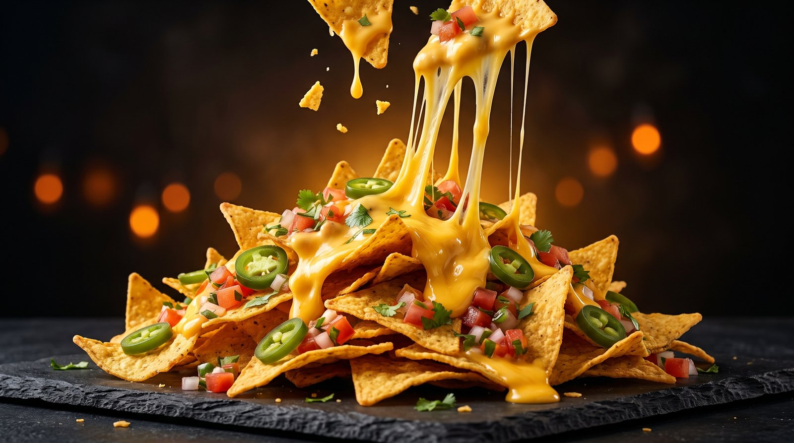
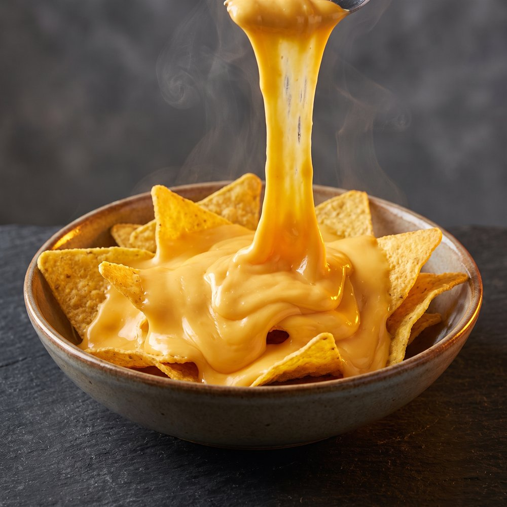

🔺
Crispy Every Time
Stone-ground corn tortillas, cut fresh and fried to that exact shade of gold where the crunch is loud but the chip never shatters.
Made to Crunch, Made to Share
Golden tortilla chips, real melted cheese and a whole lot of warmth — served the way a kind grandfather once served them to a hungry little boy.

The Original
Nachos are crispy triangles of fried corn tortilla, buried under melted cheese and piled high with toppings like jalapeños, salsa and fresh herbs. Simple, loud and impossible to eat alone.
They were invented in 1943 in Piedras Negras, Coahuila — Mexico, right on the Texas border. A maître d' named Ignacio "Nacho" Anaya had a group of hungry guests and a nearly empty kitchen, so he grabbed tortillas, cheddar and jalapeños and threw them under the heat. He called the dish "Nacho's especiales" — and the world has called them nachos ever since.
Why NachoFesta
We only ever set out to do three things well — and then we do them every single day.
Stone-ground corn tortillas, cut fresh and fried to that exact shade of gold where the crunch is loud but the chip never shatters.
No powder, no shortcuts. Aged cheddar melted to order so it stretches, pulls and settles into every gap between the chips.
Every portion is built for a table, not a person. Nachos taste better when hands keep reaching into the same plate.

Our Beginning
When our founder was a child he was very poor, and there were days when he had nothing to eat. One day a kind grandfather made him something warm, crispy and cheesy. He never forgot the taste — even though he did not yet know it was called nachos.
Years later, once he had found success, he set out to recreate that exact feeling. That is why NachoFesta exists: to serve not only delicious nachos, but warmth, happiness and kindness in every bite.
Read the Full StoryThree flavours. One festa.
Original, Cheese or Spicy — from just ฿69. Grab a plate and share it with someone.